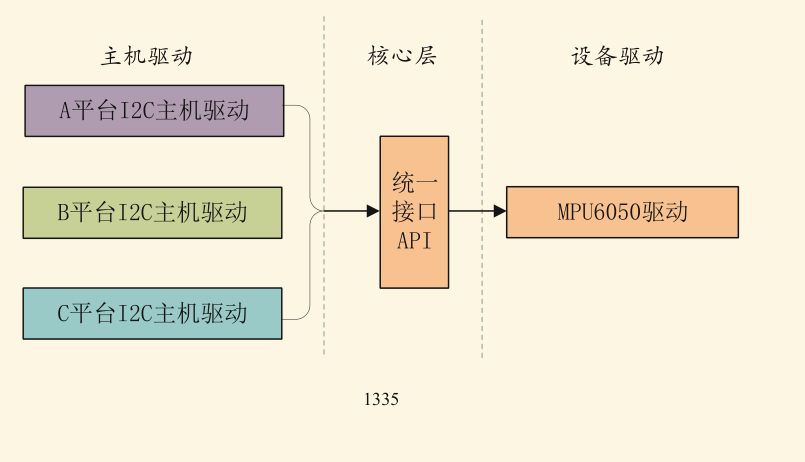

版权信息
warning
本文章为博主原创文章。遵循 CC 4.0 BY-SA 版权协议，转载请附上原文出处链接和本声明。
1. 为什么使用platform？
为了可移植性、兼容性，复用性，实现硬件和驱动的分离，让设备驱动可以在不同的板子上跑。

2. Platform 设备模型适合哪些设备？
在 Linux 内核中，像 USB、PCI、I2C 这种设备可以自动被总线发现。但很多嵌入式系统的 SoC 内部外设（如 GPIO、RTC、UART、LCD、I2C-contrller）是直接通过内存映射（Memory-mapped）访问的，CPU 无法自动“感知”它们的存在。
Platform 总线就是为了管理这些“挂在内存上”的设备而诞生的。
3. 理解 Platform 模型
Platform 模型的核心思想是 “分层”：将硬件信息和驱动逻辑分开。它由三个核心部分组成：
- Platform Device (设备)：描述硬件资源（寄存器地址、中断号等）。
- Platform Driver (驱动)：实现操作逻辑（如何初始化、读写数据等）。
- Platform Bus (总线)：作为中介，负责匹配设备和驱动。
我们简单过一遍platform的工作流程，以对这三个部分有个简单的认知。
3.1. Platform 的工作流程
3.1.1. 总览
读取设备树
→ 解析节点
→ 判断“谁来认领这个节点”
→ 创建 platform_device（兜底）
→ platform_driver 注册
→ platform_bus 匹配
→ probe()
先明确一个前提：
- Bootloader（U-Boot）已经把
.dtb放到内存 - 内核启动时，通过指针拿到整棵设备树
此时设备树只是“一坨数据结构”，还不是 device
3.1.2. step1：内核解析设备树阶段
内核启动过程中，会进入设备树初始化阶段，开始解析设备树的节点。
对每个节点，内核问一个关键的问题:
这个节点，该由谁来处理？
-
先问：“是不是‘可枚举总线’设备？”
例如USB、PCI。
如果是——跳过设备树创建设备，以后靠总线扫描来创建 -
再问：“是不是某个‘专用子系统’设备？”
例如节点里有一些特殊属性：- gpio-controller
- interrupt-controller
- clock-controller
- pinctrl
如果是——这类节点有对应子系统解析。
-
再问：”是不是属于某条总线子设备？“
例如I2C总线、SPI总线
如果是——有专门的总线框架解析
这里注意区分I2C控制器和I2C设备，I2C控制器通常是SoC的内部外设，是platform设备，而I2C设备是挂在 I2C 总线上的外设，由I2C 总线框架管理，不是 platform 设备。
问完之后，没人要你？那你就是 platform 设备。所以platform设备就是兜底规则。
3.1.3. step2：内核创建 platform_device（设备）
即内核将设备“挂”在 platform_bus 上。
内核创建了
struct platform_device *pdev;其中比较重要的结构体成员：
pdev->dev→ 设备信息pdev->dev.of_node→ 指向设备树节点pdev->dev.bus→ platform_bus
pdev->name→ 来自节点名或 compatible
这一步硬件被“对象化”了。之后GPIO、IRQ、寄存器、电源管理等全部都可以从 pdev->dev 出发统一获取。
注意这里引出了platform的核心对象之一——设备。
3.1.4. step3：platform_driver 注册（驱动）
这一步是你做的。当你根据platform设备框架编写 platform_driver（驱动逻辑）时，
一定会调用：（后文会详细提到）
module_platform_driver(my_driver);它类似于 module_init() ，而这个API的作用是把你写的驱动程序也注册进platform_bus，也就是把驱动挂到platform总线。
所以当你加载你的.ko文件时，驱动程序也注册进了platform总线。
那这里就引出了platform的核心对象之一——驱动。
3.1.5. step4：platform_bus 开始做“匹配”
这是 platform 作为总线的核心职责。
我们用伪代码来概括一下总线做的事：
for each platform_device:
for each platform_driver:
if (match(device, driver)):
call driver->probe(device)匹配机制（Match）
最常用的就是根据 compatible 进行匹配。
优先级大致是：
of_match_table← 设备树 compatibleid_tablename
整个过程我们的 compatible 就只在这一步发挥作用。
3.1.6. step5：probe() 被调用
驱动和设备匹配成功后就会调用probe()
probe()由你来实现。具体操作细节后文细说
那我们应该在probe里做什么？——让设备（硬件）可用。
典型顺序：
- 从
pdev->dev.of_node读属性 - 申请 GPIO / IRQ / 内存
- 初始化硬件状态
- 注册字符设备 / miscdevice（如果需要）
3.1.7. step6：remove
如果设备被移除或其驱动被卸载，也就是匹配失效，则会调用remove()。
remove()当然也由你来实现。我们后文细说。
4. 使用Platform设备模型
4.1. 省流版
用设备树“声明硬件”，用 platform_driver“实现驱动逻辑”，
内核通过 platform 总线把两者配对，并调用你的 probe()
4.2. step1：在设备树里声明设备
在 .dts 里写一个节点描述硬件，例如：
mykey {
compatible = "gdm,mykey";
key-gpio = <&gpio1 5 GPIO_ACTIVE_LOW>;
interrupt-parent = <&gpio1>;
interrupts = <5 IRQ_TYPE_EDGE_FALLING>;
};4.3. step2：编写platform_driver（驱动逻辑）
4.3.1. 定义匹配表
static const struct of_device_id mykey_of_match[] = {
{ .compatible = "gdm,mykey" },
{ }
};
MODULE_DEVICE_TABLE(of, mykey_of_match);这一步是在告诉 platform 总线：我能驱动什么设备，我能驱动设备的特征。 给bus的匹配提供信息。
4.3.2. 在 probe() 中完成“设备初始化”
4.3.2.1. 获取设备树节点
struct device *dev = &pdev->dev;
struct device_node *np = dev->of_node;后续所有资源都从这里“派生”
4.3.2.2. 获取GPIO【可选】
struct gpio_desc *key_gpio;
key_gpio = devm_gpiod_get(dev, "key", GPIOD_IN);4.3.2.3. 获取IRQ【可选】
int irq = platform_get_irq(pdev, 0);作用
- 解析
interrupts - 返回 Linux IRQ 号
4.3.2.4. 注册中断【可选】
devm_request_irq(dev, irq, key_isr,
IRQF_TRIGGER_FALLING,
"mykey", dev);4.3.2.5. 其他操作…
4.3.3. remove()
如果你用了：devm_开头的API，那基本上就不需要头疼资源释放的问题
因为platform + devm = 自动资源回收
4.3.4. 定义platform的操作
static struct platform_driver mykey_driver = {
.probe = mykey_probe,
.remove = mykey_remove,
.driver = {
.name = "mykey",
.of_match_table = mykey_of_match,
},
};这一步把你的 probe / remove 交给 platform 框架托管。
4.3.5. 注册 driver
在模块的编写中通常这样写：
static int __init leddriver_init(void)
{
return module_platform_driver(myled_driver);
}这一步把 driver
挂到 platform_bus 上。
4.4. step3：像往常一样添加设备
初学者通常没弄清platform的作用，它只负责板级设备的描述、匹配、生命周期管理、硬件资源获取与托管。并不是直接把设备给你创建好了，如果你需要用户态接口，比如read()、write()、ioctl()；或者需要设备接口（/dev/xxx），你仍需要自己创建（在probe()中）。
它是一个仓管，你完成一个作品需要什么资源，告诉仓管，仓管从仓库里给你拿资源，然后你来做。